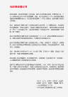

为老少边穷地区人们创造价值

光彩事业
通过投资的方式，来带动就业，传递新的观念，为老少边穷地区人们创造价值，让当地
农民成为新型的、有尊严的、富裕的农民。——刘永好
-
有着贫困幼年生活和插队下乡艰苦体验的刘永好，清楚地知道贫困地区老百姓的生活状况。为提高老少边穷地区百姓的生活水平，刘永好率先号召全国先富起来的民营企业家到老、少、边、穷地区兴办项目、开发资源，利用民营企业具备资金、市场方面的优势，为缩小地区差异、促进共同富裕做贡献。在民营企业家的共同努力下，20余年来，光彩事业取得了巨大的成就。伴随着光彩事业一路走来，刘永好和新希望集团不断践行着“义利兼顾，以义为先”的核心理念。
-
从1994年牵头发起光彩事业，新希望集团在“老、少、边、穷”地区投资已超过50亿，在新疆、甘肃、宁夏、四川、重庆、贵州、湖北、湖南、云南、江西、海南、河南、山西、山东等地建造了超过150家同类型光彩事业扶贫工厂，带动地方就业6万多人，并安置国有企业下岗、转岗员工13000多人。
在光彩事业的实践中，新希望集团不断创新扶贫方式，从单纯的项目帮扶转向产业链的帮扶，从单纯的投资帮扶转向投资与品牌、人才、信息相结合；从单打独斗、个体的帮扶转向了与合作伙伴群体联合的帮扶，使得光彩事业在不同的时期都不断焕发出活力。 - 
光彩事业倡议书
点击阅读
-
发起与倡导 造血扶贫
新希望集团是中国光彩事业的主要倡导者和积极推动者。1994年4月，时任全国工商联副主席的刘永好先生在全国工商联七届二次常委会上，牵头联系9位民营企业家，联名发出《让我们投身于扶贫的光彩事业中来》的倡议，从此拉开了中国光彩事业的序幕。
发出倡议后，仅用了63天，新希望就在四川凉山彝族自治州的西昌建成了饲料生产企业，被誉为“光彩事业一号工程”。西昌希望公司总投资1000万，主要从事各类动物饲料生产与销售，年产量近3万吨；2013年全年营业收入近1亿元，带动地方300多户农民朋友发展畜禽养殖业，户年均增收3000元以上，为带动地方经济、解决地方就业作出了贡献。
此后，新希望集团采用同样的方式先后投资26亿元，在新疆、甘肃、宁夏、四川、重庆、贵州、湖北、湖南、江西、海南、河南、山西、山东等地建造了40余家同类型光彩事业扶贫工厂。“光彩事业”如星火燎原，吸引了越来越多的民营企业家投身其中。 -
创新模式 推动“新农村”建设
新希望集团是新农村建设的积极践行者和模式探索者。
2006年“两会”期间，刘永好先生联合38位全国政协委员和人大代表，发出了《让我们积极投身到社会主义新农村建设中来》的倡议，提出“一帮一、手牵手”，一个企业带动一个村，有条件的企业带动若干村发展，得到了全国政协、中央统战部、全国工商联的大力支持，并在全国范围内得到推广。
作为发起人，新希望集团率先行动。2006年，新希望启动了“政企共建，村企联动，打造社会主义新农村建设新模式”项目。2007年以来，结合“新农村”建设的政策实施，新希望集团不断创新光彩事业的模式，促进相关地区经济发展。新希望采用“公司+合作社+家庭农场”的方式，在四川、重庆、贵州、云南、山东等省市开展农牧产业的带动和帮扶工作，通过提供优质种苗，通过养殖过程中的技术支持、疫病防治支持、资金担保支持，以及后期的市场服务，联系、支持了成千上万的专业合作社、家庭农场的发展。帮扶100余个村走上了致富之路，发展建设原料种植和畜禽养殖基地超过5万亩，辐射带动的基地超过400万亩，使所在地农村农民年平均增收近千元。 。 -
勇于担当 “精准扶贫”
“十三五”规划制定实施以来，新希望集团结合国家“精准扶贫”的政策号召，大力发展现代养猪业，争取通过3至5年帮助1万农民实现脱贫致富。 新希望将发挥在畜牧业方面的技术、规模、组织等综合优势，建立种猪场、饲料厂、技术服务队伍等，并提供金融担保服务，帮助、支持当地农民成立数百家家庭农场，通过科学、适度规模的“公司+家庭农场”的方式在当地进行精准扶贫，由企业弥补传统畜牧养殖产业链中资金、市场、技术等短板，为农户提供包括种苗、饲料、兽药在内的生产资料，对农户进行科学的养殖技术指导，并负责后期市场销售，提高农户的养殖效率，降低养殖及市场风险，最大程度保障农民收益。公司确保农户每头猪盈利不低于150元，通过规模化的养殖（每户1000头养殖规模），使每个农场年收入不低于15万元。参与家庭农场项目的贫困人口将通过这种适度规模的、现代化的养殖体系彻底脱贫致富。
目前，公司已在四川绵阳、凉山州、南充仪陇县等地进行尝试，将来还会在全国其他具备条件的地区，如河北、山东、广西等省推行。这一体系的建成，既能提升养猪业的水平，还能实现精准扶贫，实现畜牧业可持续发展的现代模式。